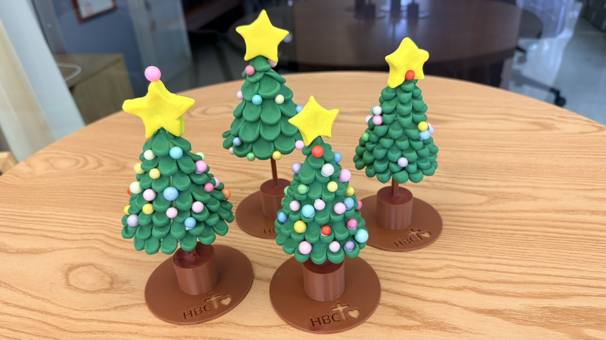
HBC 聖誕手作活動
油土手作教學,一步一步完成屬於你的聖誕樹
今天的目標
綠色葉片一層一層疊起來,再點綴彩色小圓珠,頂端戴上黃色星星。
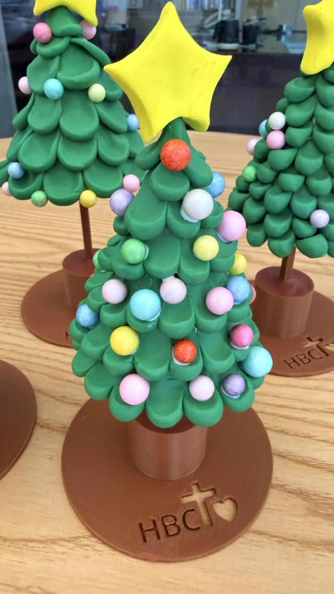
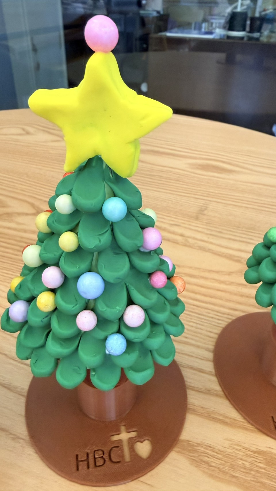
開始之前
印好扇形圖樣
沿黑線剪下
黏合圓錐
當作樹幹
固定牙籤在底座
捏成一片片葉子
捏出頂端星星
裝飾樹身
3D 列印底座
製作流程
步驟 1
步驟 2
步驟 3
步驟 4
步驟 5
步驟 6
步驟 7
步驟 8
步驟 9
步驟 10
最後
步驟 1
沿著黑線,把圖形剪下來。
剪好的扇形,下一步會捲成圓錐。
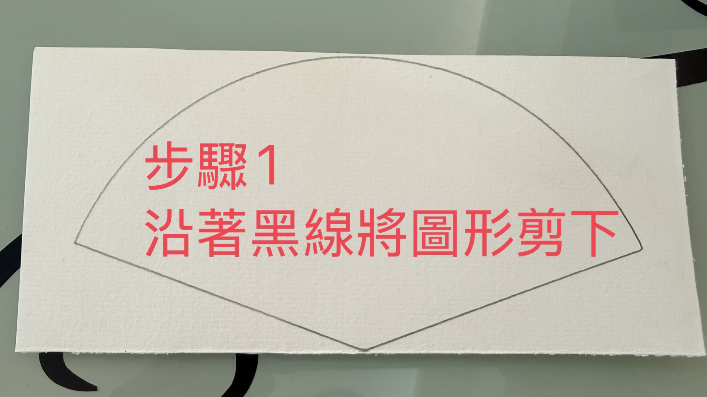
步驟 2
把扇形捲起來,做成一個圓錐。
頂尖要留一個牙籤洞,不要捲到完全封死。
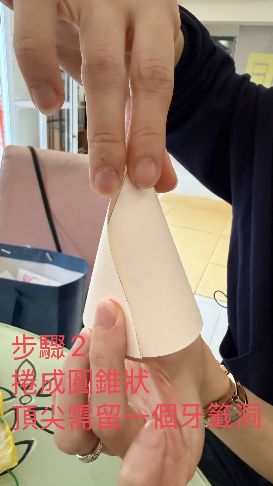
步驟 3
調整到合適的大小後,用膠帶把圓錐黏牢。
頂點預留一個小洞,給牙籤穿過。
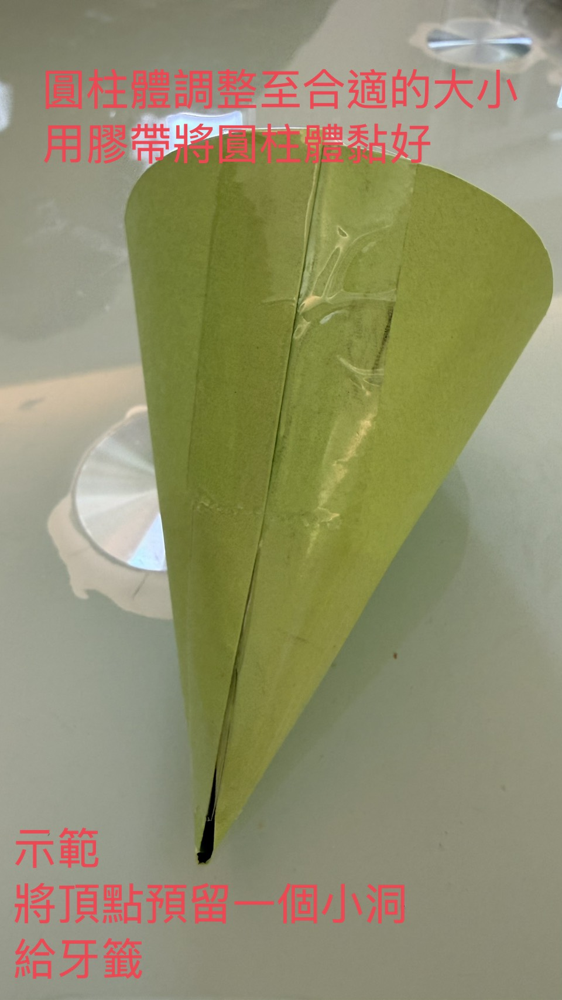
步驟 4
取一塊黏土揉軟,塞入圓錐體中。
塞緊一點,圓錐才不會晃動。
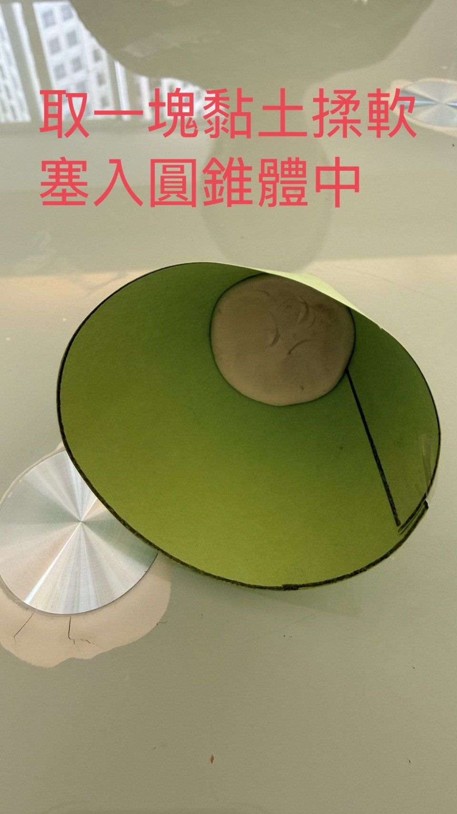
步驟 5
先把咖啡色油土揉軟,再塞進底座。
支架是聖誕樹的樹幹。
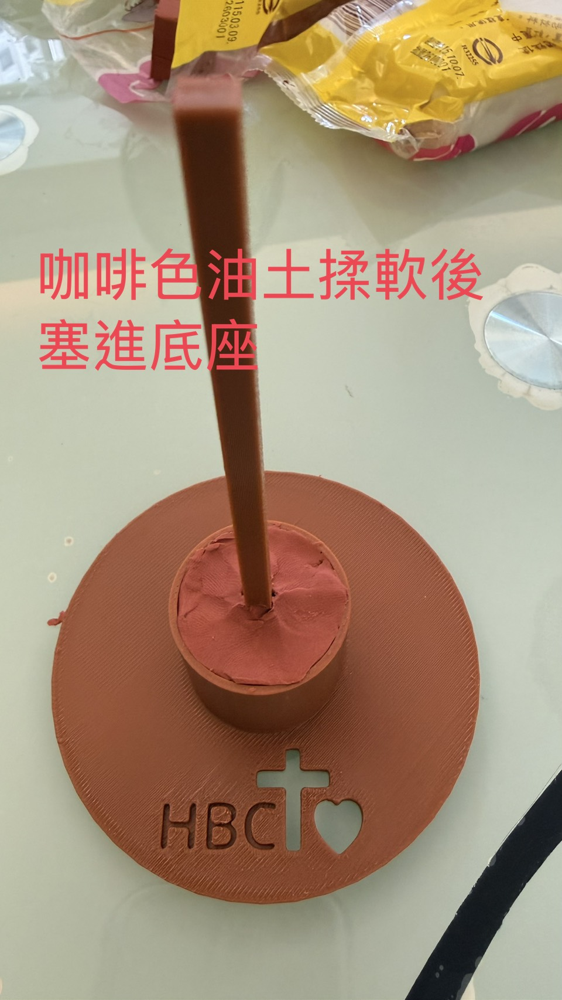
步驟 6
把綠色油土搓成一條長長的圓條。
粗細盡量均勻,下一步才好切成一樣大。
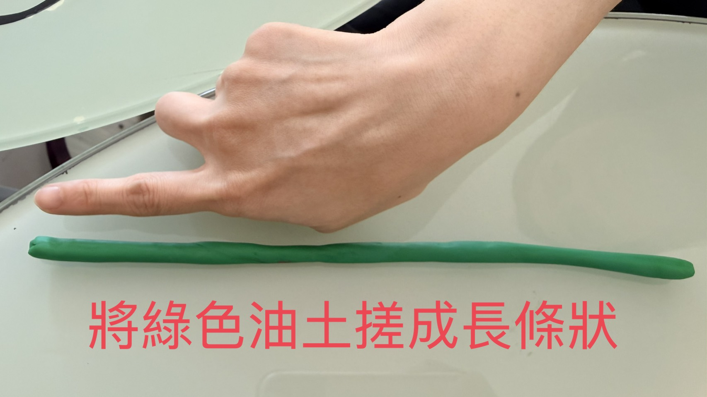
步驟 7
把長條切成一小塊一小塊。
每一塊大小一樣,葉子才會整齊好看。
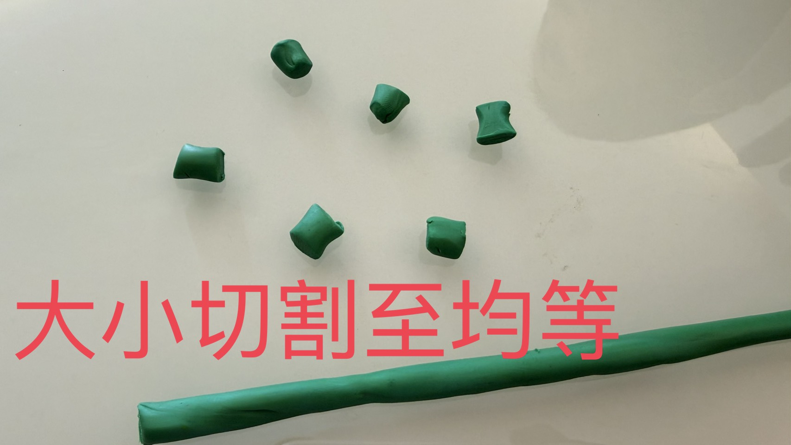
步驟 8
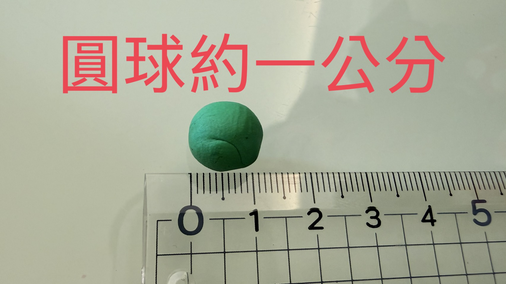
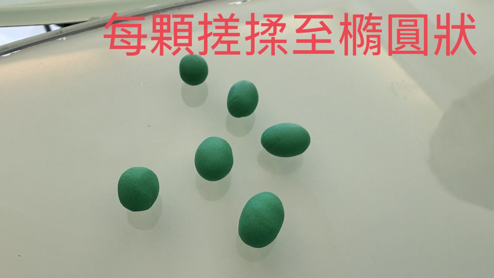
步驟 9
橢圓油土放在紙上,用手指往前壓平,推出葉尖。
請看影片示範,一片一片慢慢做。
步驟 9
一端圓潤、一端微尖,中間略微凹下。
一棵樹需要很多片葉子,一次多做一些。
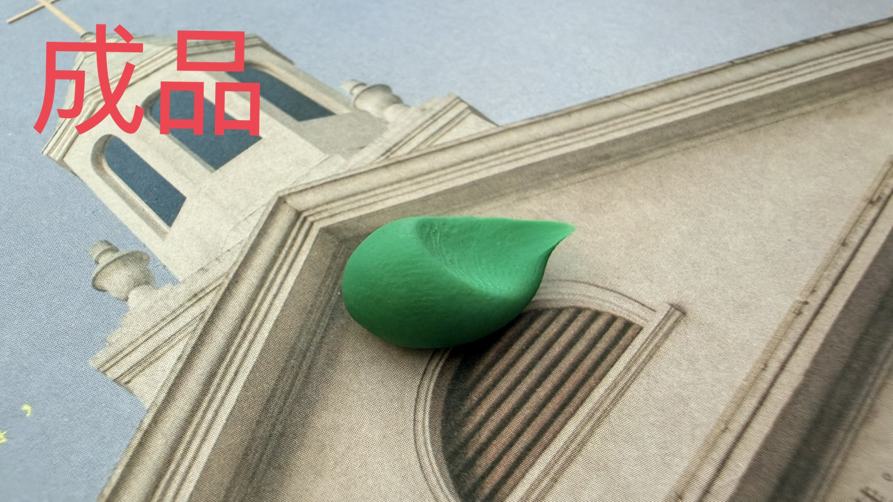
步驟 10
從最下面一圈開始,葉尖朝下,一片一片貼上圓錐。
每一片挨著前一片,繞完一圈再往上貼下一層。
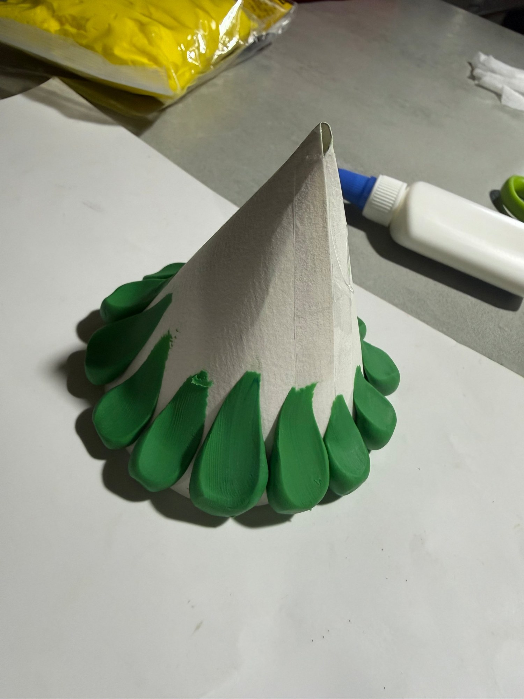
最後一步
① 貼葉子
葉尖朝下,一層一層交疊貼在圓錐上。
② 點綴
把圓珠壓在葉子之間,位置自由發揮。
③ 頂端
用黃色土捏出星星,放在樹頂。
完成!
把你的聖誕樹放在桌上,拍張照片和大家分享吧。
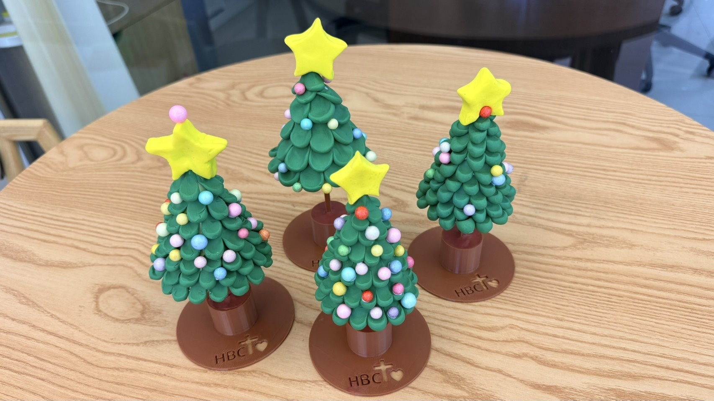